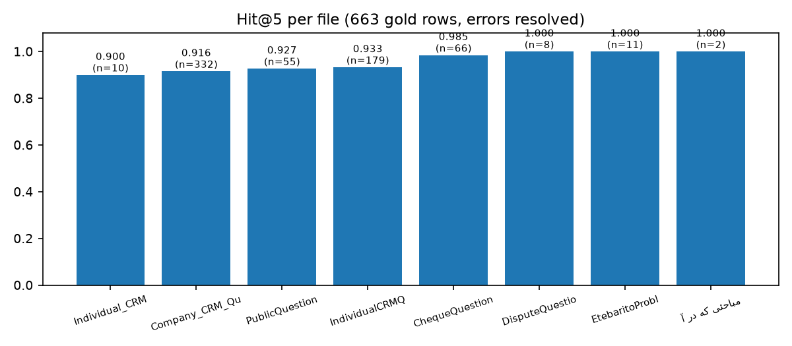

6
Benchmarks & Metrics — High-Level
| Metric | v11 (current, 663 rows) | v10 pre-fix | Meaning |
|---|---|---|---|
| Hit@5 | 0.9306 (617/663) | 0.9244 | gold in final top-5 |
| Hit@1 | 0.7511 (498/663) | — | gold at rank 1 |
| MRR | 0.8281 | 0.8369 | mean reciprocal rank |
| A retriever miss | 25 | 46 (lumped) | gold in neither BM25 nor dense top-100 |
| A′ fusion loss | 8 | — | one leg found gold, RRF dropped it |
| B reranker loss | 13 | 6 | merged top-100 → dropped from top-5 |
| D success | 617 | 660 | gold in final top-5 |
Stage funnel (663 rows): BM25 Hit@5 382 (0.576) / Recall@100 576 (0.869) · Dense Hit@5 399 (0.602) / Recall@100 552 (0.833) · Merged RRF Hit@5 437 (0.659) / Recall@100 630 (0.950) · Final Rerank Hit@5 617 (0.931).



Full reports: kb-manager/artifacts/retrieval_training/cheque_eval_report.html/pdf, report_metrics.json, retrieval_failures_v10_1405-06-23.jsonl.